01 · Хаб — единое меню
Голо-логотип с 3D-тилтом, статус-полоса с одометром монет, сегмент соперников с морфинг-пилюлей, CTA с бегущим лучом, Bento-режимы со spotlight.
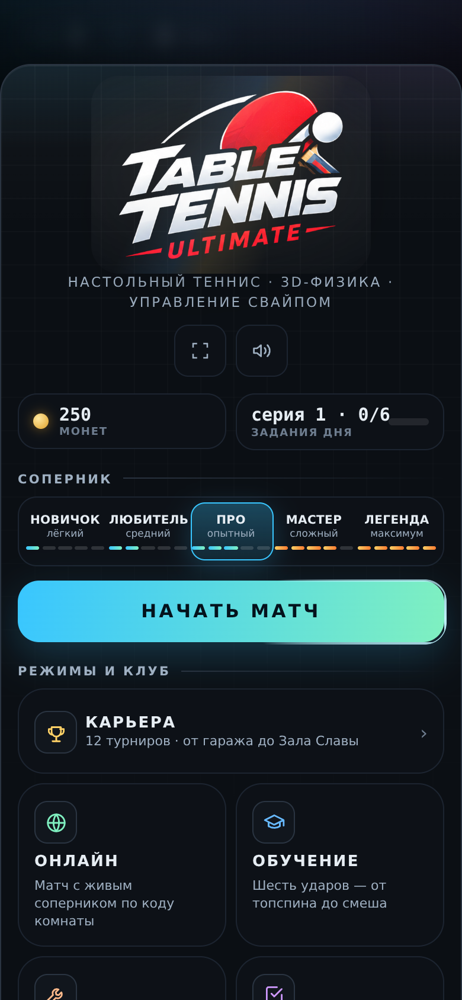
02 · Настройки
Шит арены: номер раздела, шапка, дисклеймер единых правил, хват/рука/камера.
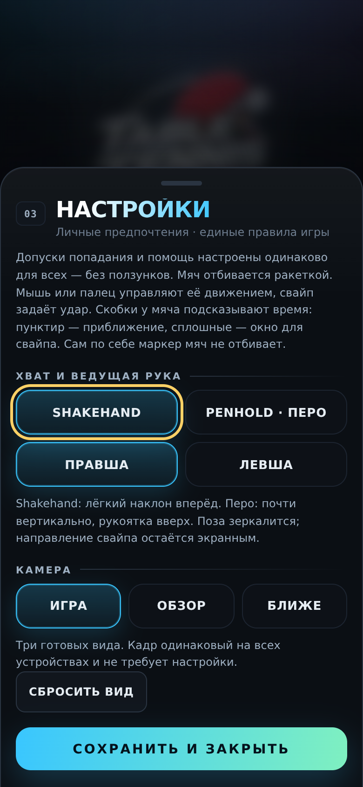
03 · Мастерская — ракетка
Кошелёк-одометр, морфинг-вкладки, три слота, стат-бары.
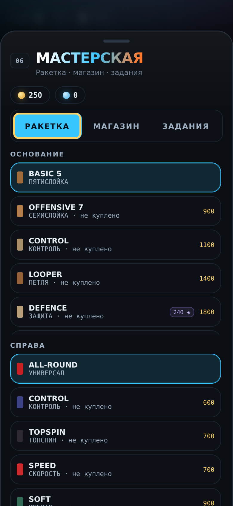
04 · Мастерская — магазин
Карточки со spotlight, цены, сезонный прогресс. Дисклеймеры сохранены.
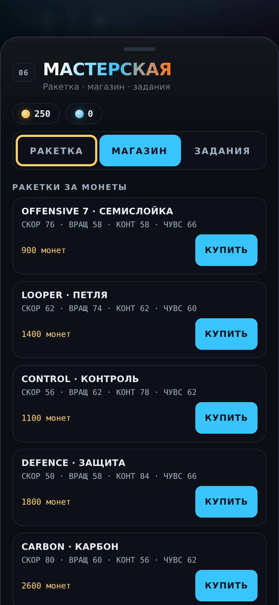
05 · Мастерская — задания
Прогресс-бары 6 ежедневных заданий, каскадный вход строк.
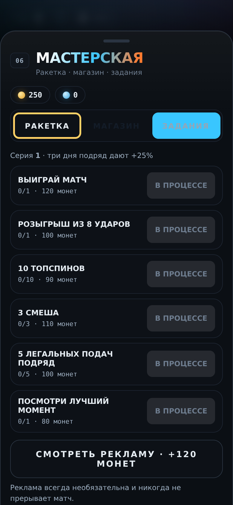
06 · Онлайн-лобби
LED-индикатор состояния подключения, код комнаты, дисклеймер эксперимента.
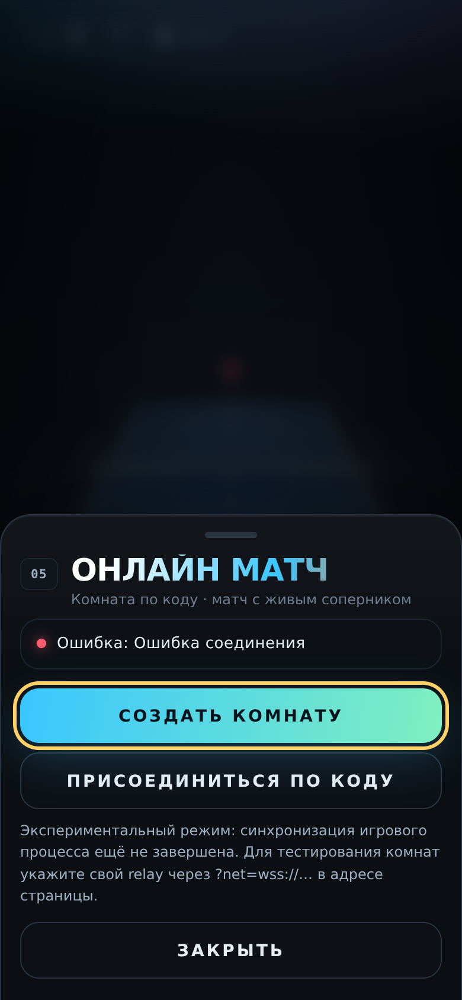
07 · Карьера — турнир
Значок номера турнира, ELO-строка, список соперников каскадом.
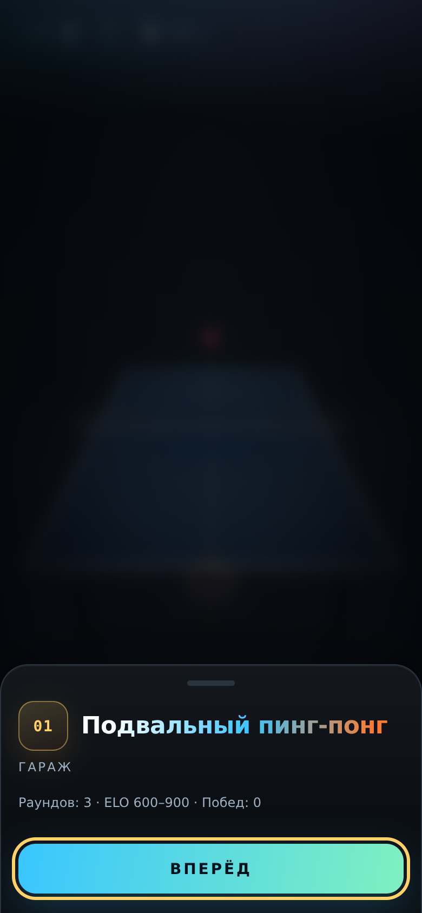
08 · Карьера — перк
Карты редкости: обычный / редкий / эпический, лучи и теги.
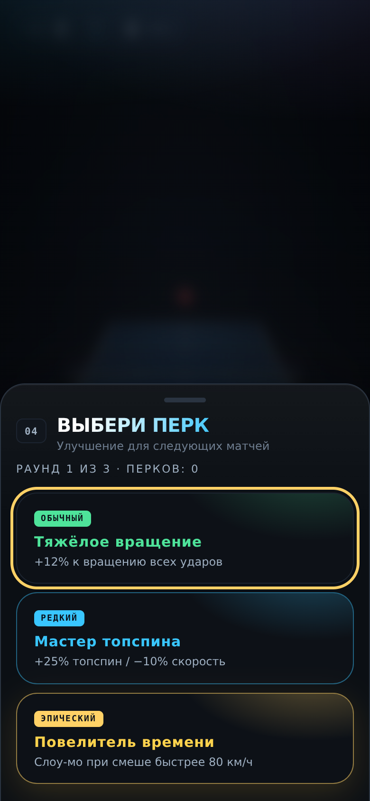
09 · Обучение пройдено
Recap шести ударов карточками.
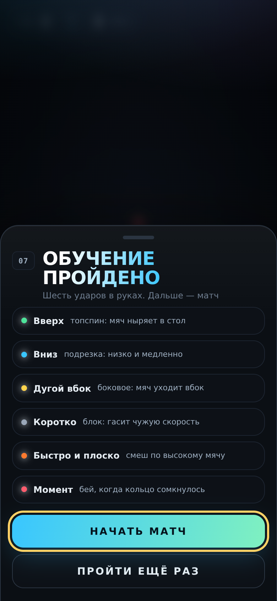
10 · Итоги матча
KPI-статистика с одометром чисел, конфетти победы, реванш.
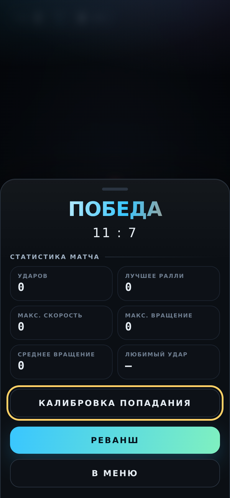
11 · Лучшие моменты
Библиотека реплеев.
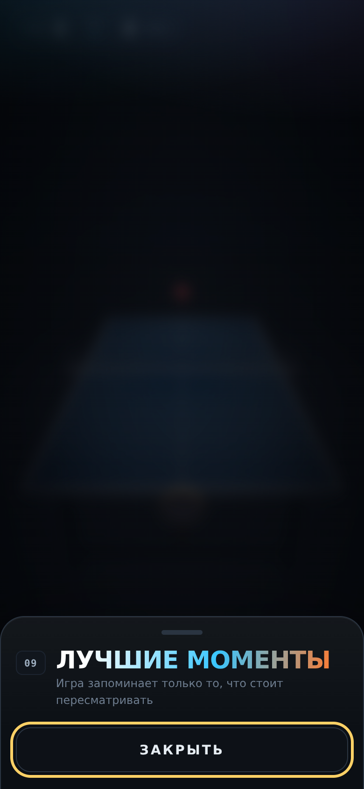
12 · Калибровка попадания
Технический экран в том же языке шитов.
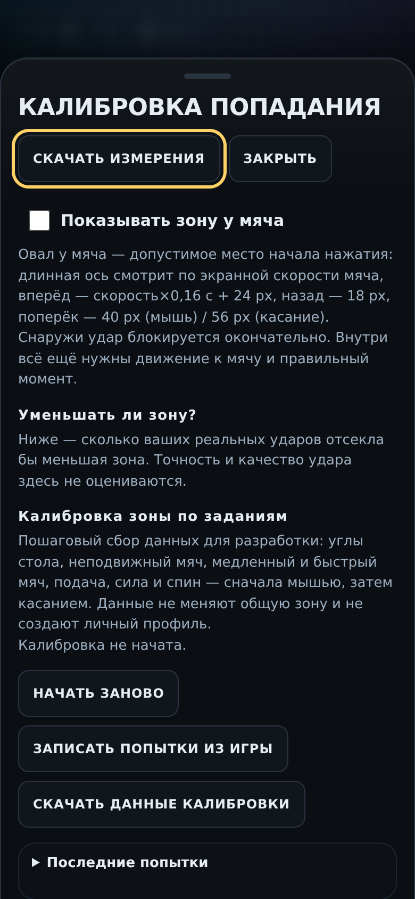
13 · Пауза в матче
Продолжить / настройки / калибровка / в меню поверх замороженной сцены.
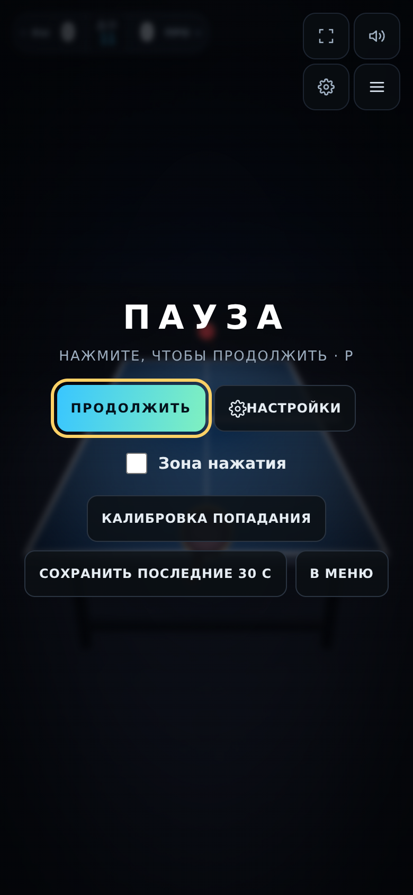